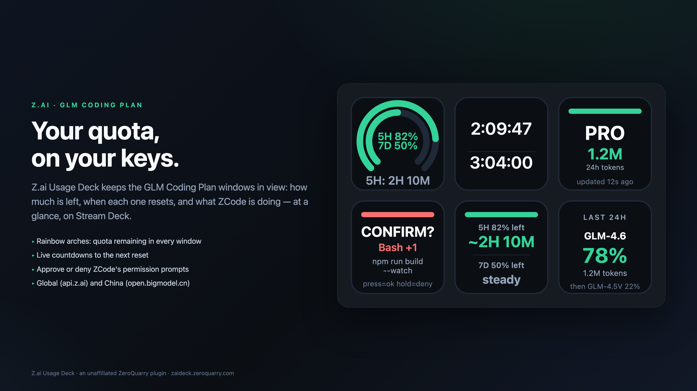

Z.ai · GLM Coding Plan · Stream Deck
Your quota, on your keys.
Z.ai Usage Deck keeps the GLM Coding Plan windows in view — how much is left, when each one resets, your burn rate, and what ZCode is doing — at a glance, on an Elgato Stream Deck.
Get it on the Elgato Marketplace
The deck, in pictures
{kind=link}
{kind=link}
{kind=link}
{kind=link}
{kind=link}
Requirements
- Elgato Stream Deck 7.1 or newer on macOS 12+ or Windows 10+.
- A Z.ai / Zhipu GLM Coding Plan API key (Global
api.z.aior Chinaopen.bigmodel.cn). Team scope additionally needs Organization and Project IDs. - For the agent keys: the ZCode bridge (one command, run once).
Quick start
- Install the plugin from the Elgato Marketplace and drag any action onto a key.
- Open any key's property inspector — every action shares one account block at the top.
Paste your API key, or press Auto-detect key: the plugin searches the environment
(
ZAI_API_KEY,Z_AI_API_KEY,ZHIPU_API_KEYand friends) and the local config files of CodexBar, OpenCode, BigModel and Zhipu tooling. Only a masked form (zai…3456) is ever shown. - Press Test connection — a one-shot quota read that reports the windows it found
(
global · plan pro · 5H 82% · 7D 50%). - Press any key before it is configured and the docs open at the section that unblocks you — quick start for the account keys, the bridge setup for the agent keys.
- Set the refresh cadence (15 s to 1 h, 60 s by default; failures back off exponentially to five minutes) and pick your region. The plugin re-reads immediately whenever your computer wakes up.
The eight actions
What Remains
Concentric rainbows whose filled length is the quota left in each window, with the reset countdown under the arch.
Reset Timer
Live countdown to the next reset: the shorter window on top, the longer one beneath, ticking on the key's own clock.
Pace
How long each window lasts at the pace it is being drained — ~2H 10M, or steady when nothing is running.
24h Tokens
A sparkline of token burn across the last day, the current hour brightest, with the 24-hour total.
Status / Refresh
Plan label, tokens used in the last 24 hours and data freshness. Press to refresh any time.
Model Mix
Which models burned the last day's tokens — the leader's share, then the runner-up.
Agent Confirm
Lights up when ZCode awaits a permission decision. Press to approve, hold to deny.
Agent Stopped
Lights up green when a ZCode thread finishes responding, cleared by the next prompt or a press.
About the Pace key
The quota API reports what is left, never how fast it is going — so the plugin watches its own readings. A fresh Pace key shows warming up for the first few polls; after roughly twelve minutes of history it shows the estimate, and a window nobody is draining shows steady rather than an invented number. The history lives only in memory.
ZCode bridge (agent keys)
The two agent keys talk to the ZCode CLI through hook scripts the plugin ships
inside its bundle. Run the installer once — it copies the scripts to ~/.zcode-bridge and
merges a hooks block into ~/.zcode/cli/config.json, backing the file up first:
macOS node "$HOME/Library/Application Support/com.elgato.StreamDeck/Plugins/com.zeroquarry.zai-usage-deck.sdPlugin/bridge/install.mjs" Windows node "%appdata%\Elgato\StreamDeck\Plugins\com.zeroquarry.zai-usage-deck.sdPlugin\bridge\install.mjs"
Until the installer has run, the agent keys show an amber NO BRIDGE card. The hooks
defer to the app's own dialogs whenever the keys are not on screen;
ZCODE_BRIDGE_DISABLED=1 bypasses the bridge without uninstalling, and deleting the
hooks key removes it entirely. Every decision lands in
~/.zcode-bridge/journal.log, so an alert can always be explained after the fact.
Where the data comes from
The plugin reads the monitoring endpoints your own API key already exposes —
GET /api/monitor/usage/quota/limit and GET /api/monitor/usage/model-usage —
from the host you choose. Windows are named after the durations the API actually reports: an account
whose short window is an hour is labelled 1H, not 5H. A five-hour reset that
claims to be more than five hours away is dropped rather than corrected for a guessed timezone.
Privacy
The plugin talks to exactly one service: the Z.ai / BigModel monitoring host you configure. It
sends only your API key, as the Authorization header of a quota request, plus the
Organization and Project headers in team scope. No telemetry, no analytics, no
third-party requests of any kind. The API key is stored in Stream Deck's own settings on
your machine, is never written to logs or per-key settings, and is only ever shown masked. The
agent keys read and write only the local ~/.zcode-bridge/ working files.
Support
- Questions, bugs and feature requests: support@zeroquarry.com
- State cards make problems self-explanatory:
SET KEY,AUTH ERR,RATE LIMIT,OFFLINE,API ERR,TEAM CFG,NO DATA,NO BRIDGE.